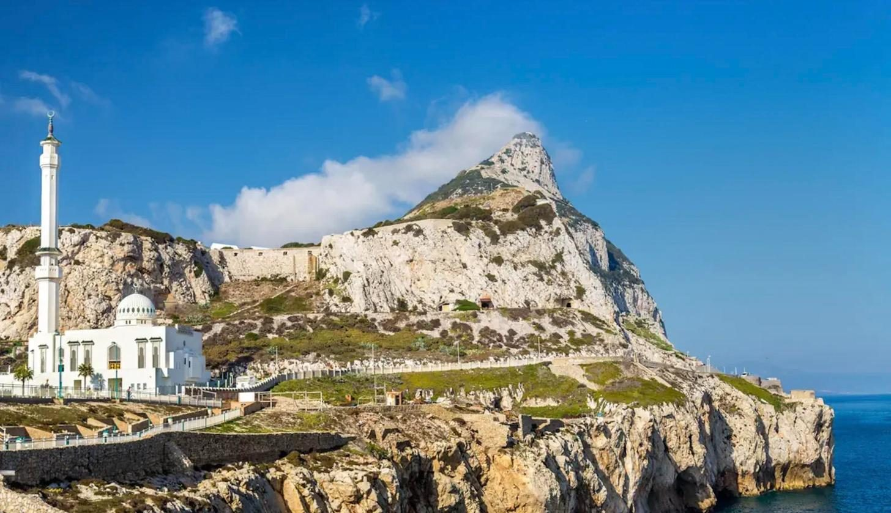
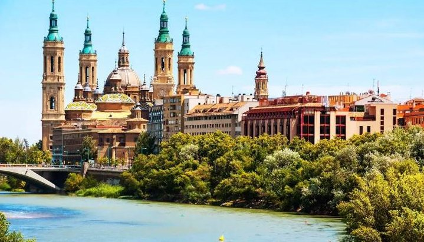
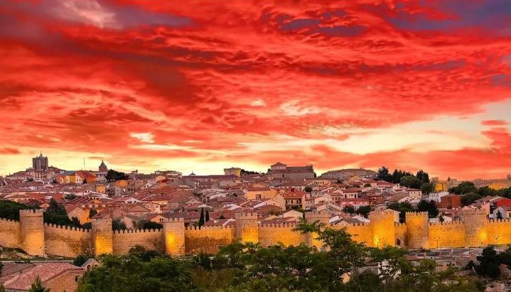
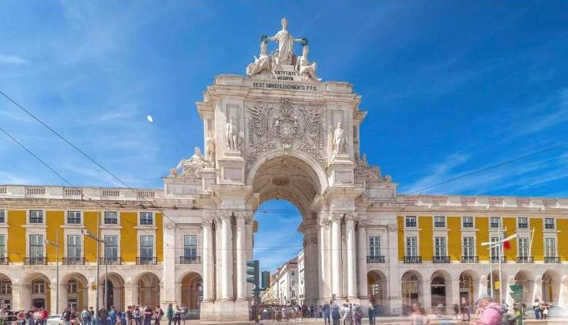
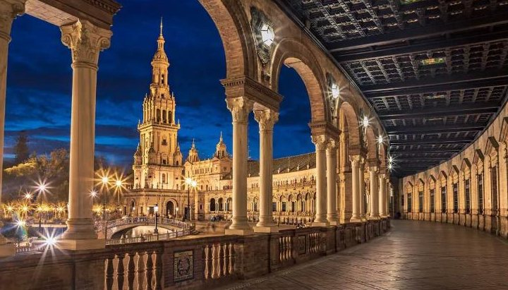
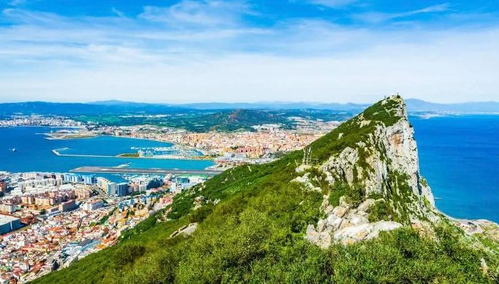
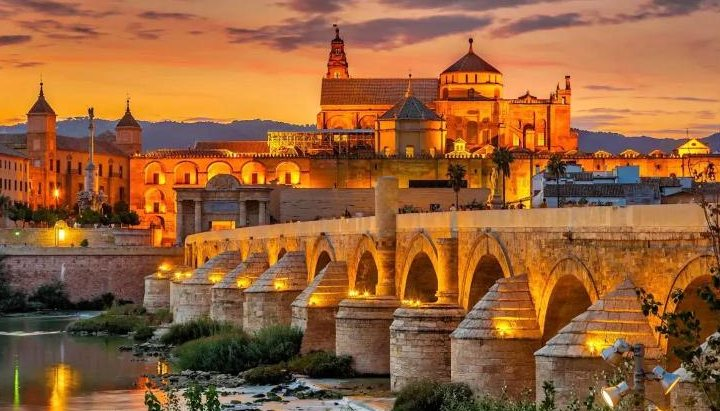
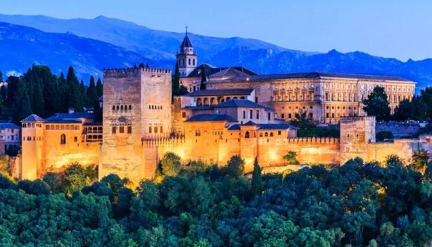

dzień1
Wyjazd z Polski
📍 Katowice → Niemcy → Francja
Wyjazd rano, przejazd przez Niemcy i nocą przez Francję.

Najdłuższa pętla: 15 dni, od Lourdes po Gibraltar
Kolejność zwiedzania może się nieco zmienić — o szczegółach decyduje pilot na miejscu.
📍 Katowice → Niemcy → Francja
Wyjazd rano, przejazd przez Niemcy i nocą przez Francję.

📍 Lourdes (Francja)
Przejazd doliną Rodanu na południe Francji. Po południu Lourdes: bazyliki, Grota Objawień, a wieczorem dla chętnych procesja ze świecami.

📍 Saragossa (Hiszpania)
Wczesny wyjazd do Hiszpanii. Postój w Saragossie: rzymskie ruiny, renesansowe pałace i mauretańskie zabytki, miasto malarza Francisco Goi.

📍 Ávila · Salamanka → okolice Coimbry
Ávila — miasto świętej Teresy, otoczone jednymi z najlepiej zachowanych murów w Europie. Potem Salamanka z najstarszym uniwersytetem w Hiszpanii. Wieczorem przejazd do Portugalii.
📍 Coimbra · Batalha · Fatima
Coimbra — dawna stolica Portugalii i miasto studenckie: katedra, kościół Santa Cruz, stary uniwersytet. Potem Batalha i jej ogromny gotycki klasztor (UNESCO). Nocleg w Fatimie.

📍 Cabo da Roca · Fatima
Przylądek Cabo da Roca — najdalej na zachód wysunięty punkt Europy. Potem sanktuarium w Fatimie: Bazylika Matki Boskiej Różańcowej i Kościół Trójcy Przenajświętszej.

📍 Lizbona → okolice Sewilli
Stolica Portugalii: zamek św. Jerzego, klasztor Hieronimitów, Wieża Belém i katedra. Wieczorem przejazd do Hiszpanii.

📍 Sewilla → okolice Algeciras
Złota Wieża nad rzeką, gotycka katedra i dzwonnica Giralda. Nocleg na samym południu Hiszpanii.

📍 Gibraltar · Tanger (Maroko)
Czas wolny na Gibraltarze (wycieczka busem po skale ok. 50 €).

📍 Kordoba → okolice Granady
Kordoba i jej Mezquita — ogromny dawny meczet z katedrą w środku. Stare miasto na liście UNESCO.

📍 Granada → okolice Walencji
Zwiedzanie Granady i Alhambry, pałacu dawnych władców arabskich — najwspanialszego zabytku Andaluzji.

📍 Walencja → w stronę Barcelony
Bazylika i katedra, w której przechowywany jest kielich uważany za Świętego Graala, dawna giełda jedwabiu La Lonja i nowoczesna dzielnica Miasteczka Sztuki i Nauki.
📍 Awinion · Pont du Gard (Francja)
Awinion — miasto papieży: pałac papieski, katedra i słynny most z piosenki. Potem Pont du Gard, ogromny rzymski akwedukt znany z pocztówek.
📍 Francja → Niemcy
Po śniadaniu wyjazd do Polski, jazda przez Francję i Niemcy.
📍 Katowice
Granica w nocy, do Katowic autokar przyjeżdża ok. 6:00–8:00 rano.
Wyjazd autokarem z Katowic w sobotę, powrót po 15 dniach. Cena jest za jedną osobę, gdy w pokoju są 2 osoby (urlop.pl podaje cenę za dwie: 13 238 zł).
| Cena wycieczki (najtańszy termin) | 6 619 zł |
| Obowiązkowe ubezpieczenie (leczenie i wypadki) | 200 zł |
| Fundusze gwarancyjne (TFG i TFP) | 30 zł |
| Obowiązkowo w autokarze: bilety, przewodnicy, słuchawki, taksy | 350 € ≈ 1 488 zł |
| Obowiązkowe obiadokolacje | 150 € ≈ 638 zł |
Euro przeliczone orientacyjnie po ok. 4,25 zł. Bez wycieczki do Maroka (150 €) i napojów. Dla 2 osób: ok. 17 900 zł.
Wycieczkę organizuje biuro Funclub. Ceny sprawdziłem w porównywarce urlop.pl, która ją sprzedaje — infolinia urlop.pl:
22 451 00 00
📞 Zadzwoń Zobacz ofertę na urlop.pl ↗